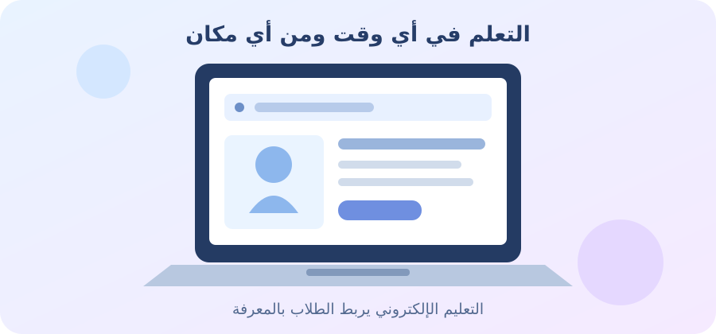

اسم الطالبة: مريم هاني السيد محمد
الرقم الجامعي: 2500385
شهد التعليم تغيرًا كبيرًا بسبب تطور الإنترنت والتكنولوجيا الحديثة. فأصبح بإمكان الطالب التعلم من المنزل أو من أي مكان باستخدام أجهزة الكمبيوتر والهواتف المحمولة. وتساعد منصات التعلم الإلكتروني على تسهيل التعليم من خلال توفير الدروس والمواد التعليمية والأنشطة، بالإضافة إلى التواصل بين المعلمين والطلاب.
منصات التعلم الإلكتروني هي مواقع إلكترونية أو تطبيقات تساعد الأشخاص على التعلم عبر الإنترنت. وتتيح للمعلمين مشاركة الدروس والملفات التعليمية، كما تسمح للطلاب بمشاهدة الفيديوهات وقراءة المحتوى وحل الواجبات والتواصل مع المعلمين.
تساعد منصة جوجل كلاس روم المعلمين على تنظيم الفصول الدراسية ومشاركة الواجبات والمواد التعليمية والتواصل مع الطلاب وتقديم الملاحظات. وتُستخدم في إدارة الأنشطة المدرسية والجامعية عبر الإنترنت.
مودل هو نظام لإدارة التعلم تستخدمه المؤسسات التعليمية. ويوفر أدوات لإنشاء المقررات الإلكترونية والاختبارات والأنشطة والمواد التعليمية وتنظيمها.
تقدم كورسيرا دورات تعليمية وبرامج لتطوير المهارات عبر الإنترنت بالتعاون مع جامعات ومؤسسات مختلفة. ويمكن للمتعلمين دراسة موضوعات متنوعة واكتساب مهارات جديدة.
يقوم الطالب عادةً بإنشاء حساب على المنصة ثم الاشتراك في مقرر تعليمي. وبعد ذلك يستطيع الوصول إلى الدروس والمواد التعليمية، ومشاهدة الفيديوهات، وتسليم الواجبات، وأداء الاختبارات، والحصول على الملاحظات والتقييمات عبر الإنترنت.

| اسم المنصة | الغرض الأساسي | أهم المميزات |
|---|---|---|
| جوجل كلاس روم | إدارة الفصول الدراسية | الواجبات والمواد التعليمية والتواصل |
| مودل | إدارة المقررات الإلكترونية | الاختبارات والأنشطة والموارد التعليمية |
| كورسيرا | التعلم عبر الإنترنت وتطوير المهارات | الدورات المصورة والبرامج التعليمية والشهادات في بعض الدورات |
أصبحت منصات التعلم الإلكتروني جزءًا مهمًا من التعليم الحديث؛ لأنها تمنح الطلاب فرصًا أكبر للوصول إلى المعرفة وتطوير مهاراتهم. وعلى الرغم من وجود بعض التحديات، فإن الاستخدام الجيد لهذه المنصات يجعل التعليم أكثر مرونة وسهولة في الوصول إليه.